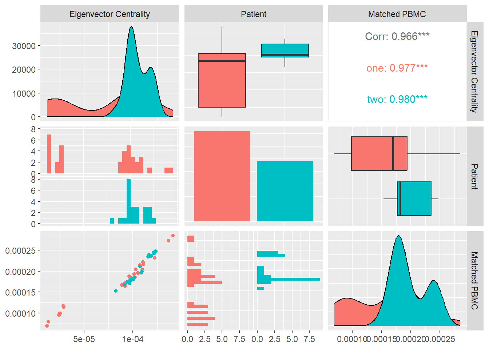

── Attaching core tidyverse packages ──────────────────────── tidyverse 2.0.0 ──
✔ dplyr 1.1.0 ✔ readr 2.1.4
✔ forcats 1.0.0 ✔ stringr 1.5.0
✔ ggplot2 3.4.1 ✔ tibble 3.2.0
✔ lubridate 1.9.2 ✔ tidyr 1.3.0
✔ purrr 1.0.1
── Conflicts ────────────────────────────────────────── tidyverse_conflicts() ──
✖ dplyr::filter() masks stats::filter()
✖ dplyr::lag() masks stats::lag()
ℹ Use the conflicted package (<http://conflicted.r-lib.org/>) to force all conflicts to become errors
Attaching package: 'data.table'
The following objects are masked from 'package:lubridate':
hour, isoweek, mday, minute, month, quarter, second, wday, week,
yday, year
The following objects are masked from 'package:dplyr':
between, first, last
The following object is masked from 'package:purrr':
transpose
Loading required package: usethis
ℹ Google's Terms of Service: <https://mapsplatform.google.com>
ℹ Please cite ggmap if you use it! Use `citation("ggmap")` for details.
Attaching package: 'igraph'
The following objects are masked from 'package:lubridate':
%--%, union
The following objects are masked from 'package:dplyr':
as_data_frame, groups, union
The following objects are masked from 'package:purrr':
compose, simplify
The following object is masked from 'package:tidyr':
crossing
The following object is masked from 'package:tibble':
as_data_frame
The following objects are masked from 'package:stats':
decompose, spectrum
The following object is masked from 'package:base':
union
Attaching package: 'tidygraph'
The following object is masked from 'package:igraph':
groups
The following object is masked from 'package:stats':
filter
Registered S3 method overwritten by 'GGally':
method from
+.gg ggplot2
Loading required package: statnet.common
Attaching package: 'statnet.common'
The following objects are masked from 'package:base':
attr, order
Loading required package: network
'network' 1.18.1 (2023-01-24), part of the Statnet Project
* 'news(package="network")' for changes since last version
* 'citation("network")' for citation information
* 'https://statnet.org' for help, support, and other information
Attaching package: 'network'
The following objects are masked from 'package:igraph':
%c%, %s%, add.edges, add.vertices, delete.edges, delete.vertices,
get.edge.attribute, get.edges, get.vertex.attribute, is.bipartite,
is.directed, list.edge.attributes, list.vertex.attributes,
set.edge.attribute, set.vertex.attribute
sna: Tools for Social Network Analysis
Version 2.7-1 created on 2023-01-24.
copyright (c) 2005, Carter T. Butts, University of California-Irvine
For citation information, type citation("sna").
Type help(package="sna") to get started.
Attaching package: 'sna'
The following objects are masked from 'package:igraph':
betweenness, bonpow, closeness, components, degree, dyad.census,
evcent, hierarchy, is.connected, neighborhood, triad.census
Loading required package: viridisLite
Registered S3 methods overwritten by 'bnlearn':
method from
print.bn sna
plot.bn sna
Attaching package: 'bnlearn'
The following object is masked from 'package:sna':
degree
The following object is masked from 'package:tidygraph':
as.igraph
The following objects are masked from 'package:igraph':
as.igraph, compare, degree, subgraph
Attaching package: 'xtable'
The following object is masked from 'package:ggdendro':
label
Attaching package: 'janitor'
The following objects are masked from 'package:stats':
chisq.test, fisher.test
Attaching package: 'kableExtra'
The following object is masked from 'package:dplyr':
group_rows
Attaching package: 'tibbletime'
The following object is masked from 'package:stats':
filter
Loading required package: gsubfn
Loading required package: proto
Loading required package: RSQLite
------------------------------------------------------------------------------
You have loaded plyr after dplyr - this is likely to cause problems.
If you need functions from both plyr and dplyr, please load plyr first, then dplyr:
library(plyr); library(dplyr)
------------------------------------------------------------------------------
Attaching package: 'plyr'
The following object is masked from 'package:network':
is.discrete
The following objects are masked from 'package:tidygraph':
arrange, mutate, rename
The following objects are masked from 'package:dplyr':
arrange, count, desc, failwith, id, mutate, rename, summarise,
summarize
The following object is masked from 'package:purrr':
compact
NOTE: Either Arial Narrow or Roboto Condensed fonts are required to use these themes.
Please use hrbrthemes::import_roboto_condensed() to install Roboto Condensed and
if Arial Narrow is not on your system, please see https://bit.ly/arialnarrow
Attaching package: 'pander'
The following object is masked from 'package:GGally':
wrap
Please cite as:
Hlavac, Marek (2022). stargazer: Well-Formatted Regression and Summary Statistics Tables.
R package version 5.2.3. https://CRAN.R-project.org/package=stargazer
Version: 1.38.6
Date: 2022-04-06
Author: Philip Leifeld (University of Essex)
Consider submitting praise using the praise or praise_interactive functions.
Please cite the JSS article in your publications -- see citation("texreg").
Attaching package: 'texreg'
The following object is masked from 'package:tidyr':
extract
Install package "strengejacke" from GitHub (`devtools::install_github("strengejacke/strengejacke")`) to load all sj-packages at once!
Attaching package: 'sjmisc'
The following objects are masked from 'package:janitor':
remove_empty_cols, remove_empty_rows
The following object is masked from 'package:purrr':
is_empty
The following object is masked from 'package:tidyr':
replace_na
The following object is masked from 'package:tibble':
add_case
Attaching package: 'sjlabelled'
The following object is masked from 'package:usethis':
tidy_labels
The following object is masked from 'package:forcats':
as_factor
The following object is masked from 'package:dplyr':
as_label
The following object is masked from 'package:ggplot2':
as_label
Attaching package: 'rstatix'
The following objects are masked from 'package:plyr':
desc, mutate
The following object is masked from 'package:janitor':
make_clean_names
The following object is masked from 'package:stats':
filterAre tumors patient specific
To address this question we compare the characteristics and derived network measures of antibody–peptide epitopes for patient 1 and patient 2 to show the patient-specific nature of tumors expressed through peptides originating from tumor-induced mutations. To do so, we apply statistical analysis techniques such as multivariate analysis of variance (MANOVA) on the network measures to evaluate if they are statistically significantly different per patient. In addition, we look at how different network measures correlate with PMBC values per patient. We apply a structure learning algorithm to the data to learn the structure of the directed acyclic graph (DAG) to analyze the causality of data features, i.e., network measures and the matched PBMC values. Finally, we compare the performance of personalized models on unseen data from different patients to understand if models can generalize over unseen data from different patients.
Data Structure
We chose a network representation with layers to study the diverse relations and interactions between the components. These network representations are called multiplex networks, where a node corresponds to a “physical object,” while node-layer pairs are different instances of the same object.
For instance, a node could represent an online user, while node-layer pairs would represent different accounts of the same user in different online social networks; or a node could represent a social actor, while node-layer pairs would represent different social roles (e.g., friend, worker, and family member) of the same social actor; or a node could stand for a location in a transportation network, while node-layer pairs would represent stations of different transportation modes (e.g., streets, highways, and subways).
The connection between nodes and node-layer pairs is given by the notion of supra-nodes: i.e., cliques in the supra-graph formed by node-layer pairs that are instances of the same object. To correctly represent a physical object in the different layers of the multiplex network, we break down the peptides into amino acids and the amino acids to their smallest component atoms and their connection bonds. The layers coordinate, atom, monomer, polymer, complex, and system are introduced. The coordinate layer represents the three-dimensional coordinates of every atom in the system. The atom layer, as shown in Figure 5, is the layer that represents the atoms and their bonds that construct objects in the monomer layer, e.g., an amino acid.

Data
The data consists of the mRNA and DNA sequences of 2 cancer patients where sequences areas of mutation have been selected and potential peptide candidates have been identified. Enzyme-linked immunospot (ELISpot) assays have been performed with the HLA alleles and peptides from both patients producing the values we wish to predict.
Data Overview
Data Dictionary
The produced data’s attributes as listed in ?@tbl-data_dict_assays will give us the ability to create the network structures that represent the relationships between HLA alleles and peptides. This network structures will give us better insights and permit to apply analytical approaches to predict HLA-peptide interactions expressed as discretized class representing ranges of the numbers of matched blood mononuclear cells (PBMC’s).
?(caption)
Data Sample
A sample from the data as visualized in ?@tbl-data_sample_assays, shows 10 values of the peptide’s amino acids sequence with one letter code, the number of peptides per assay, the patients HLA’s and the measured ELISpot value i.e. blood mononuclear cells (PBMC’s).
?(caption)
ELISpot value Distribution
As shown in ?@fig-elispot_values_hist, we wish to look at the distribution of the ELISpot values for both patients.The medians from both patients are different as well as the distribution of the values. The values of patient one are restricted to a smaller range and show an outlier in the upper quartile. In contrast patient two shows values distributed over a wider range, again with a wider distribution in the upper quartile.
We can conclude that the patients show different distributions of observed PBMC values, i.e. the PBMC values are patient specific.
Warning: Use of `pationsOneandTwoDf$ELISPOTvalue` is discouraged.
ℹ Use `ELISPOTvalue` instead.Warning: The dot-dot notation (`..density..`) was deprecated in ggplot2 3.4.0.
ℹ Please use `after_stat(density)` instead.`stat_bin()` using `bins = 30`. Pick better value with `binwidth`.
`stat_bin()` using `bins = 30`. Pick better value with `binwidth`.
Saving 7 x 5 in imagePeptides nr. vs ELISpot Value
In ?@fig-elispot_values_violin, we graph a violin plot to analyze how the number of peptides in a system correlate with the PBMC values and specific patient. We see that patient two has systems with exclusively one peptide in contrast to patient one that has systems with one, two and three peptides. Patient one has sa high concentration of systems with only one peptide. The correlation between number of peptides and ELISPot values is not clear. Systems with one peptide seem to produce higher PBMC values in contrast to systems with multiple peptides. This conclusion should be take with caution since only patient one has systems with more than one peptide.
Saving 7 x 5 in imageNumber of Amino acids vs ELISpot values
In Figure 1, we analyze the distribution of ELISpot values in relation to the total number of Amino Acids originating from the peptides in a system. We look at these correlations for both patients individually and together. Here the difference between the patients is not so clear, we observe a pattern in both patients where the lower and the upper range of the number of patients correlate with a high ELISPot value. It is notisible that systems with 30 amino acids consistently produce PBMC values above 500 for patient two. We can conclude that systems with higher total number of amino acids in the peptides tend to produce higher ELISpot values.
Saving 7 x 5 in image
Picking joint bandwidth of 27.5
Saving 7 x 5 in image
Picking joint bandwidth of 169
Saving 7 x 5 in image
Picking joint bandwidth of 102
Linear Model coefficient analysis
In order to better understand the potential influence of particular data attributes we apply a linear regression model. Analyzing the coefficients we can understand the predictors influence on the produced PBMC values.
From the results shown in Table 1, we can see that the total number of amino acids in a system have positive linear relationship with the produced PBMC’s for patient one and negative for patient two. The performance of the model differs between the two patients and the same coefficients have different linear relationship on the produced PBMC for the two patients. Hence the relationship between these coefficients and the matched PBMC value is patient specivif. This observation indicates that tumor mutations and immune system response are not only tumor but also patient specific.
Warning: Model matrix is rank deficient. Parameters `Numberofpeptides` were not
estimable.| All patients | Patient 1. | Patient 2. | ||||
| Coeffcient | Estimates | P-Value | Estimates | P-Value | Estimates | P-Value |
| Intercept | 447.60 | 0.017 | 101.15 | 0.011 | 470.34 | 0.067 |
| Tot.Nr. Amino Acids | 4.64 | 0.544 | 3.22 | 0.139 | -2.11 | 0.853 |
| Nr. of Peptides | -210.97 | 0.061 | -64.66 | 0.006 | ||
| Observations | 65 | 25 | 40 | |||
| R2 / R2 adjusted | 0.055 / 0.025 | 0.298 / 0.234 | 0.001 / -0.025 | |||
Generated Data Structure
The peptide, as illustrated in Figure 2, is a short chain of amino acids (typically 2 to 50) linked by chemical bonds (called peptide bonds). The HLA cell-surface protein, as illustrated in Figure 3, is a chain of amino acids that is responsible for the regulation of the immune system. To understand HLA-peptide interactions we need to understand how the peptide is binding, as illustrated in Figure 4, to the HLA in the context of a complex.


Multiplex Network
The HLA-peptide interaction is dependent of the chemical reactions of atoms belonging to amino acids that will fall close enough in 3-dimensional space. To understand and study the diverse types of relations or interactions that exist between the components we chose a network representation with a notion of layers.
This type of networks is called multiplex networks as shown in Figure 5 where a node corresponds to a “physical object,” while node-layer pairs are different instances of the same object. For instance a node could represent an online user, while node-layer pairs would represent different accounts of the same user in different online social networks; or a node could

represent a social actor, while node-layer pairs would represent different social roles (friend, worker, family member) of the same social actor; or a node could stand for a location in a transportation network, while node-layer pairs would represent stations of different transportation modes (e.g., streets, highways, and subways).
The connection between nodes and node-layer pairs is given by the notion of supra-nodes: i.e., cliques in the supra-graph formed by node-layer pairs that are instances of the same object.
To correctly represent a physical object in the different layers of the multiplex we break down the peptides to amino acids and the amino acids to their smallest component atoms and their connections bonds. The layers coordinate, atom, monomer, polymer, complex and system are introduced.
The Atom layer, as shown in Figure 6, is the layer that represents the atoms and their bonds that construct objects in the monomer layer e.g., amino acid.
The Monomer layer, as shown in Figure 6, represents the objects of type monomer that is a molecule of any of a class of compounds, mostly organic, that can react with other molecules to form very large molecules, or polymers.
The Polymer layer, as shown in Figure 6, represents the objects of type polymer. Polymer is any object of a class of natural or synthetic substances composed of very large molecules, called macromolecules, which are multiples of monomers.
The Complex layer, as shown in Figure 6, represents polymers that form a complex by binding to each other e.g. peptide binds to a HLA to form a complex.
The System layer represents the totality of complexes that exist in an ELISpot assay and is representative of multiple HLA-peptide complexes. One system could be represented as shown in Figure 6 where we are omitting the coordinates layer.

Network Topological Attributes
To compare and predict systems interactions and behavior we will look at measures and metrics that these networks express. Calculating and assigning these metrics for every individual system permits us to create a dataset that can be used in statistical, machine and deep learning analysis approaches. Additionally, we apply deep learning on graphs on the individual systems to make predictions of their interactions in this case the ELISpot result.
Size largest Component
In undirected networks typically exists large components that fill most of the network, while the rest of the network is divided into a lot of small disconnected components. The size of the largest connected component can be expressed by: \(S=1-e^{-cS}\) introduced by Erdos and Renyi in 1958 where \(c\) denotes mean degree or the average of in- and out-going edges.
We compute the size of the largest component \(S\) of each system and and look at its distribution and correlation with the particular patient and the measured matched PBMC’s i.e. ELISpot values.
As visualized in Figure 7, even though the medians of both patients are close, the values of patient one are better distributed with a large portion in the lower quartile. Patient two shows a high concentration around the median and the upper quartile and an outlier in the upper whisker.
When considering the \(S\) values over all the systems, we observe a positive correlation with the matched PBMC’s with statistical significance shown by a \(p-value <0.10\).
This could mean that systems that create larger connected components, have a higher chance of producing a higher PBMC value. This is confirmed by the distribution of the PBMC values of patient two, showing overall significantly higher values than patient one, and a distribution of the size of the largest components that is concentrated around the median of 30 and the upper quartile.
When looking at the individual patients, we observe that patient two shows inverse correlation, even though not significant, with the matched PBMC’s. Patient one shows a positive correlation with matched PBMC’s.
`stat_bin()` using `bins = 30`. Pick better value with `binwidth`.
`stat_bin()` using `bins = 30`. Pick better value with `binwidth`.Saving 7 x 5 in image
`stat_bin()` using `bins = 30`. Pick better value with `binwidth`.
`stat_bin()` using `bins = 30`. Pick better value with `binwidth`.Avg. Spectral clustering
A fast approach to separate a network in communities is by applying spectral modularity maximization by assigning a node to one of two groups communities. If we consider \(s\) as a vector in n-dimensional space, that implies that the vector must point to one of the corners of the n-dimensional hypercube. By creating a relaxed method where \(s\) is aloud to take any value of \(|s|=\sqrt{n}\) the form we arrive at a matrix notation \(Bs=\beta s\). Hense the optimal \(s\) is on of the eigenvectors of the modularity matrix and \(\beta\) is the corresponding eigenvalue. We can find which eigenvector by applying \[Q=\dfrac{n}{4m}\beta\] Since \(s^Ts=n\) we can maximize the inner product \(s^Tu=\sum_is_iu_i\). The maximum is achieved when \(s_iu_i\) is positive for all \(i\), which occurs when \(s_i\) has the same sign as \(u_i\) for all \(i\): \[s_i=\begin{cases} +1, & \text{if } u_i>0\\ -1, & \text{if }u_i<0 \end{cases}\]
This leads to a simple approach, we calculate the eigenvector of ton the modularity matrix corresponding to the highest eigenvalue and assign nodes ot communities according to the signs of the elements in this vector.
We slightly modify it by assigning zero to the nodes that correspond to negative eigenvalues instead of -1: \[s_i=\begin{cases} +1, & \text{if } u_i>0\\ 0, & \text{if }u_i<0 \end{cases}\] Then we calculate the average \(\dfrac{1}{n}\sum_{s=1}^{n}s_i\) of the assigned values that produces a value between zero and one and is indicative of how balanced is the distribution of the nodes between two communities.
In Figure 8 we calculate the avg. spectral clustering for each system and look at its distribution and correlation with the particular patient and the measured matched PBMC’s i.e. ELISpot values.
We see that the distributions for both patients are quite similar. Patient two produces values that are skewed towards the lower quartile while patient one values are better distributed around the median. Even though combined data of both patients show a inverse Pearson correlation coefficient with the matched PBMC’s, patient one shows a positive correlation with statistical significance indicated by a \(p-value<0.05\).
This might indicate that there is a difference in the produced PMBC’s between patients with similar avg. spectral clustering values. In other words the systems of individual patients react differently to a similar internal node distribution between two communities.
`stat_bin()` using `bins = 30`. Pick better value with `binwidth`.
`stat_bin()` using `bins = 30`. Pick better value with `binwidth`.Saving 7 x 5 in image
`stat_bin()` using `bins = 30`. Pick better value with `binwidth`.
`stat_bin()` using `bins = 30`. Pick better value with `binwidth`.Global Clustering Coefficient
Clustering coefficient is a measure of the degree to which vertices in a network tend to create tightly knit groups, closed triads: \[ C=\dfrac{(\text{number of closed paths of length two})}{(\text{number of paths of length two})}\] C=1 implies perfect transitivity,a networks whose components are all closed triads. C=0 implies no closed triads. Concretely we apply the Watts and Strogatz defined a clustering coefficient that quantifies the likelihood that two nodes that are connected to the same node are also connected to each other. degree to which vertices in a network tend to create tightly knit groups, closed triads: \[ C=\dfrac{(\text{number of triangles})*3}{(\text{number of connected triples})}\] Concretely we apply the following formula \[C=\dfrac{1}{n}\sum_{u=1}^{n}c_u\] where \(n\) is the number of nodes and \(c_u\) is: \[c_u = \frac{2 T(u)}{deg(u)(deg(u)-1)}\] where \(T(u)\) is the number of triangles through node \(u\) and \(deg(u)\) is the degree of \(u\).
In ?@fig-GlobalClusteringCoeffiecient we calculate global clustering coefficient for each system and look at its distribution and correlation with the particular patient and the measured matched PBMC’s i.e. ELISpot values.
We see that the distributions for both patients are quite similar. Patient two produces values that are skewed towards the upper quartile while patient one values are better distributed around the median. Combined data of both patients shows a positive Pearson correlation coefficient,with statistical significance indicated by a \(p-value<0.05\), with the matched PBMC’s. Patient one and two show a similar positive correlation.
This observation can imply that systems with high clustering coefficient, i.e. systems where monomers, polymers and atoms that are connected to the same monomer, polymer or atom have a high likelihood to be connected to each other, will produce a higher number of matched PBMC’s.
Saving 7 x 5 in image
`stat_bin()` using `bins = 30`. Pick better value with `binwidth`.
`stat_bin()` using `bins = 30`. Pick better value with `binwidth`.Transitivity
The fundamental type of relation between nodes in a network is “connected by an edge.” If the “connected by an edge” relation were transitive it would mean that if node u is connected to node v, and v is connected to w, then u is also connected to w. \[T = 3\frac{\#triangles}{\#triads}\] where “triads” are two edges with a shared vertex and triangles are loops of length three.
In ?@fig-Transitivity we calculate the transitivity for each system and look at its distribution and correlation with the particular patient and the measured matched PBMC’s i.e. ELISpot values.
We see that the distributions for both patients are quite similar. Patient one produces values that are skewed towards the lower quartile while patient two values are better distributed around the median. Combined data of both patients show a positive Pearson correlation coefficient,with no statistical significance, with the matched PBMC’s. Patient one and two show a similar positive correlation.
This might confirm the observed correlation with the global clustering coefficient.
Saving 7 x 5 in image
`stat_bin()` using `bins = 30`. Pick better value with `binwidth`.
`stat_bin()` using `bins = 30`. Pick better value with `binwidth`.Average Degree
The average degree of a network:\[\langle k \rangle=2\frac{\text{number of edges}}{\text{number of nodes}}\] is related to the density of the network, where in a dense network the average degree grows linearly with the number of nodes, while in a sparse network it grows sub linearly.
In Figure 9 we calculate \(\langle k \rangle\) for each system and look at its distribution and correlation with the particular patient and the measured matched PBMC’s i.e. ELISpot values.
We see that the distributions for both patients are some what similar. Patient one produces values that are skewed towards the lower quartile while patient two values are better distributed around the median. The median of patient one is significantly higher.
Combined data of both patients show an inverse Pearson correlation coefficient, with no statistical significance, with the matched PBMC’s. Patient two shows a similar positive correlation in contrast to patient one that shows a positive correlation.
From these observations we could imply that impact of the density of the network on the matched PBMC’s is patient specific.
Saving 7 x 5 in image
`stat_bin()` using `bins = 30`. Pick better value with `binwidth`.
`stat_bin()` using `bins = 30`. Pick better value with `binwidth`.
`stat_bin()` using `bins = 30`. Pick better value with `binwidth`.
`stat_bin()` using `bins = 30`. Pick better value with `binwidth`.Degree Centrality
A large volume of work is dedicated to centrality. The question which are the most important vertices in or central nodes in a network. There are many possible definitions of importance and consequently many centrality measures. Degree, the number of incoming and outgoing edges a node has, is sometimes called degree centrality to emphasize its use as a centrality measure. Useful though it is quite a crude measure as it awards a node one centrality point for every neighbor it has. But not all neighbors are necessarily equivalent.
In Figure 10 we calculate the degree centrality for each system and look at its distribution and correlation with the particular patient and the measured matched PBMC’s i.e. ELISpot values.
We see that the distributions for both patients are different. Patient one produces values that are mostly skewed towards the lower quartile while patient two are skewed towards the upper quartile. The median of patient one is significantly higher.
Combined data of both patients show a positive Pearson correlation coefficient with a statistical significance indicated by a \(p-value<0.05\), with the matched PBMC’s. Patient two shows a similar positive correlation in contrast to patient one that shows a correlation near to zero.
From these observations we could imply that impact of high number of incoming and outgoing edges from the vertices in the system have a positive impact on the matched PBMC’s. There is however a patient specific aspect in the magnitude of the positive impact.
Saving 7 x 5 in image
`stat_bin()` using `bins = 30`. Pick better value with `binwidth`.
`stat_bin()` using `bins = 30`. Pick better value with `binwidth`.
`stat_bin()` using `bins = 30`. Pick better value with `binwidth`.
`stat_bin()` using `bins = 30`. Pick better value with `binwidth`.Average Core Hubs
Average core hubs is a measure of the average of the degrees of the top-100 hubs in a system:\[\dfrac{1}{n}\sum_{i=1}^{100}k_i\] where \(k\) is the degree of vertice i.
In Figure 11 we calculate the average core hubs for each system and look at its distribution and correlation with the particular patient and the measured matched PBMC’s i.e. ELISpot values.
We see that the distributions for both patients are different. Patient one produces values that are mostly skewed towards the lower quartile while patient two skewed towards the upper quartile. The median of patient one is significantly higher.
Combined data of both patients show a positive Pearson correlation coefficient with statistical significance indicated by a \(p-value<0.01\), with the matched PBMC’s. Patient two shows a similar positive correlation in contrast to patient one that shows a correlation near to zero.
From these observations we could imply that impact of high number of incoming and outgoing edges from the vertices in the system have a positive impact on the matched PBMC’s. There is however a patient specific aspect in the magnitude of the positive impact. This observation agrees with the observations of Degree Centrality and its correlation with the matched PBMC values.
Saving 7 x 5 in image
`stat_bin()` using `bins = 30`. Pick better value with `binwidth`.
`stat_bin()` using `bins = 30`. Pick better value with `binwidth`.
`stat_bin()` using `bins = 30`. Pick better value with `binwidth`.
`stat_bin()` using `bins = 30`. Pick better value with `binwidth`.Density
Density of a graph is the ratio between the edges present in a graph and the maximum number of edges that the graph can contain. Conceptually, it provides an idea of how dense a graph is in terms of edge connectivity. \[ d = \frac{m}{n(n-1)}\] where n is the number of nodes and m is the number of edges in a graph G.
In Figure 12 we calculate the density for each system and look at its distribution and correlation with the particular patient and the measured matched PBMC’s i.e. ELISpot values.
We see that the distributions for both patients are different. Patient one produces values that are mostly skewed towards the lower quartile while patient’s two are skewed towards the upper quartile. The median of patient one is significantly higher.
Combined data of both patients show a positive Pearson correlation coefficient with statistical significance indicated by a \(p-value<0.01\), with the matched PBMC’s. Patient two shows a similar positive correlation in contrast to patient one that shows a correlation near to zero.
From these observations we could imply that a high number of incoming and outgoing edges from the vertices in the system have a positive impact on the matched PBMC’s. There is however a patient specific aspect in the magnitude of the positive impact. This observation agrees with the observations of Degree Centrality and Average Core Hubs.As the measures, Density,Degree Centrality and Average Core Hubs, overlap it make sense to select the one with the highest correlation and statistical significance i.e. Average Core Hubs.
Saving 7 x 5 in image
`stat_bin()` using `bins = 30`. Pick better value with `binwidth`.
`stat_bin()` using `bins = 30`. Pick better value with `binwidth`.
`stat_bin()` using `bins = 30`. Pick better value with `binwidth`.
`stat_bin()` using `bins = 30`. Pick better value with `binwidth`.Betweenness Centrality
Betweenness Centrality measures the importance of a node based on the number of paths between two other nodes that pass through it. Betweenness Centrality is a guide to the influence nodes have over the flow of information, energy between others. Betweenness Centrality \(x_i\) is given by \[x_i=\sum_{st}n^{i}_{st}\] where \(n^{i}_{st}\) is the node \(i\) that lies on the shortest path from vertice \(s\) to \(t\).
Concretely we average the betweennes centrality \[ \langle x\rangle=\dfrac{1}{n}\sum_{i=1}^{n}x_i\]
In Figure 13 we calculate the Betweenness Centrality for each system and look at its distribution and correlation with the particular patient and the measured matched PBMC’s i.e. ELISpot values.
We see that the distributions for both patients are different. Patient one produces values that are mostly skewed towards the lower quartile while patient’s two are skewed towards the upper quartile. The median of patient one is significantly higher.
Combined data of both patients show a positive Pearson correlation coefficient with statistical significance indicated by a \(p-value<0.01\), with the matched PBMC’s. Patient two shows a similar positive correlation in contrast to patient one that shows a correlation near to zero.
From these observations we could imply that impact of high number nodes in a system that are on the path between other nodes has a positive impact on the matched PBMC’s. There is however a patient specific aspect in the magnitude of the positive impact.
Saving 7 x 5 in image
`stat_bin()` using `bins = 30`. Pick better value with `binwidth`.
`stat_bin()` using `bins = 30`. Pick better value with `binwidth`.
`stat_bin()` using `bins = 30`. Pick better value with `binwidth`.
`stat_bin()` using `bins = 30`. Pick better value with `binwidth`.Closeness Centrality
Closeness centrality of a node u is the reciprocal of the average shortest path distance to u over all n-1 reachable nodes.
\[C(u) = \frac{n - 1}{\sum_{v=1}^{n-1} d(v, u)}\],
where d(v, u) is the shortest-path distance between v and u,and n is the number of nodes that can reach u. Concretely we average the betweennes centrality \[ \langle c\rangle=\dfrac{1}{n}\sum_{u=1}^{n}c(u)\]
In Figure 14 we calculate the Betweenness Centrality for each system and look at its distribution and correlation with the particular patient and the measured matched PBMC’s i.e. ELISpot values.
We see that the distributions for both patients are different. Patient one produces values that are mostly skewed towards the lower quartile while patient two are evenly distributed. The median of patient one is significantly higher.
Combined data of both patients show a positive Pearson correlation coefficient with statistical significance indicated by a \(p-value<0.05\), with the matched PBMC’s. Patient one and two shows a similar positive correlation.
From these observations we could imply that,the impact of high number nodes in a system with a high number of shortest distances to all other nodes, has a positive impact on the matched PBMC’s.
Saving 7 x 5 in image
`stat_bin()` using `bins = 30`. Pick better value with `binwidth`.
`stat_bin()` using `bins = 30`. Pick better value with `binwidth`.
`stat_bin()` using `bins = 30`. Pick better value with `binwidth`.
`stat_bin()` using `bins = 30`. Pick better value with `binwidth`.Degree Pearson Correlation Coefficient
Measures the degree assortativity of a network i.e. the similarity of connections in the graph with respect to the node degree.It varies between −1 ≤ r ≤ 1: For r < 0 the network is assortative, for r = 0 the network is neutral and for r > 0 the network is disassortative.
In Figure 15 we calculate the Degree Pearson correlation Coefficient for each system and look at its distribution and correlation with the particular patient and the measured matched PBMC’s i.e. ELISpot values.
We see that the distributions for both patients are different. Patient one and two produce values that are mostly skewed towards the upper quartile but there is a significant difference in their medians.
Combined data of both patients show a positive Pearson correlation coefficient with statistical significance indicated by a \(p-value<0.05\), with the matched PBMC’s. Patient one and two show a similar positive correlation.
From these observations we could imply that,a high number similar connections between nodes in a system e.g. monomers,polymers,atoms has a positive impact on the matched PBMC’s.
Saving 7 x 5 in image
`stat_bin()` using `bins = 30`. Pick better value with `binwidth`.
`stat_bin()` using `bins = 30`. Pick better value with `binwidth`.
`stat_bin()` using `bins = 30`. Pick better value with `binwidth`.
`stat_bin()` using `bins = 30`. Pick better value with `binwidth`.Eigen Vector Centrality
In many circumstances a node’s importance in a network is increased by having connections with other nodes that are themselves important. Eigenvector centrality is an extension of degree centrality that takes this factor into account. Eigenvector centrality awards to a node a number of points proportional to the centrality scores of its neighbors. The eigenvector centrality \(x_i\) of node \(i\) is defined to be proportional to the sum of the centralities of i’s neighbors. The eigenvector centrality \(x_i\) of node i is defined to be proportional to the sum of the centralities of i’s neighbors
\[ x_i=k^{-1} \sum_{\text{nodes j}\\ \text{ neighbours of i}}x_j \] In matrix notation \[x=k^{-1} Ax\\ Ax=kx\] where x is the vector with elements equal to the centrality scores x_i and k is a constant. In other words, x is an eigenvector of the adjacency matrix.
In Figure 16 we calculate the average Eigen Vector Centrality for each system and look at its distribution and correlation with the particular patient and the measured matched PBMC’s i.e. ELISpot values.
We see that the distributions for both patients are very similar. Patient one and two produce values that are mostly skewed towards the upper quartile with patient two having a longer tail.
Combined data of both patients show a positive Pearson correlation coefficient with no statistical significance , with the matched PBMC’s. However patient two shows an inverse correlation in contrast to positive correlation of patient one.
From these observations we could imply that importance of this measure towards the impact on the matched PBMC’s is not significant and it is patient specific.
Saving 7 x 5 in image
`stat_bin()` using `bins = 30`. Pick better value with `binwidth`.
`stat_bin()` using `bins = 30`. Pick better value with `binwidth`.
`stat_bin()` using `bins = 30`. Pick better value with `binwidth`.
`stat_bin()` using `bins = 30`. Pick better value with `binwidth`.
Page Rank Centrality
If a node with high Katz centrality has edges pointing to many others, then all of those others also get high centrality. A high-centrality node pointing to one million others gives all one million of them high centrality. One could argue that this is not always appropriate. In many cases it means less if a node is only one among many that are pointed to. The centrality gained by virtue of receiving an edge from a prestigious node is diluted by being shared with so many others.
We can derive the following variant of Katz centrality in which the centrality we derive from the network neighbors is proportional to their centrality divided by their out-degree. \[x_i=α\sum_jA_{ij}\frac{x_j}{k_j^{out}} +β\]
In Figure 17
we calculate the average Page Rank Centrality for each system and look at its distribution and correlation with the particular patient and the measured matched PBMC’s i.e. ELISpot values.
We see that the distributions for both patients are very different. Patient one and two produce similar medians but patient one distribution is skewed toward the lower quartile and patient two toward the higher quartile.
Combined data of both patients show a positive Pearson correlation coefficient with statistical significance shown by a \(p-value<0.05\), with the matched PBMC’s. Patient two has similar correlation.
From these observations we could imply that systems with a high number of nodes that have a high centrality based on connections from nodes that on their turn have high centrality has a positive influence on the produced PMBC’s. However this influence seems to be patient specific.
Saving 7 x 5 in image
`stat_bin()` using `bins = 30`. Pick better value with `binwidth`.
`stat_bin()` using `bins = 30`. Pick better value with `binwidth`.
`stat_bin()` using `bins = 30`. Pick better value with `binwidth`.
`stat_bin()` using `bins = 30`. Pick better value with `binwidth`.Attribute Assortativity Coefficient Source
Assortativity measures the similarity of connections in the graph with respect to the attribute source. In the generated multiplex structure the attribute “source” refers to the unique id of the node the edge originates from.
In Figure 18 we calculate the average Attribute Assortativity Coefficient for attribute Source for each system and look at its distribution and correlation with the particular patient and the measured matched PBMC’s i.e. ELISpot values.
We see that the distributions for both patients are very different. Patient one and two produce similar medians but patient one distribution is skewed toward the upper quartile and patient two toward the lower quartile.
Combined data of both patients show a inverse Pearson correlation coefficient with statistical significance shown by a \(p-value<0.05\), with the matched PBMC’s. Patient one and two have similar correlation.
From these observations we could imply that systems with a more diverse unique node distribution have a higher likelihood to produce more PMBC’s.
Saving 7 x 5 in image
`stat_bin()` using `bins = 30`. Pick better value with `binwidth`.
`stat_bin()` using `bins = 30`. Pick better value with `binwidth`.
`stat_bin()` using `bins = 30`. Pick better value with `binwidth`.
`stat_bin()` using `bins = 30`. Pick better value with `binwidth`.Causality Graph
A Bayesian network is probabilistic model that represents the variables and their conditional dependencies as directed acyclic graph (DAG). In a DAG variables are represented as vertices and conditiononal dependencies as edges. Vertices that are not connected represent conditionally independent variables. Each node is associated with a probability function that takes in, a particular set of values for the node’s parent variables, and gives the probability, or probability distribution, of the variable represented by the node.
As shown in ?@fig-causality, we apply a structure learning algorithm to the data in order to learn the structure of the directed acyclic graph (DAG) from the data. Concretely we apply Incremental Association (IAMB) algorithm, based on the Markov blanket detection algorithm of the same name, which is based on a two-phase selection scheme (a forward selection followed by an attempt to remove false positives).
Analyzing the DAG we see that the matched PBMC, vectors,Average core hubs, Attribute Assortativity Coefficient Source,Size largest component, Eigen vector Centrality and closeness centrality are conditionally dependent on the patient. This observation confirms observations made the correlation analysis. This indicates that system structures have patient specific attributes and their matched PBMC’s are as well patient specific.
Multivariate analysis of variance
Multivariate analysis of variance (MANOVA) is a statistical procedure for comparison of multivariate sample means. It is often used when there are two or more dependent variables and we wish to perform regression analysis and analysis of variance for them by one or more factor variables or covariates.
In our case we wish to determine which network topology attributes are highly significantly different among patients.
From the results shown in the following table, we see that Matched PBMC,Average Core hubs, Average Betweenness Centrality have a high statistical significance with \(p-value<0.001\).
Closeness Centrality,Degree Pearson Correlation Coefficient, Page Rank Centrality,Attribute Assortativity Coefficient Source with \(p-value<0.01\)
Size largest Component, Response Degree Centrality,Density statistical sigificance with \(p-value<0.05\)
From this analysis we can conclude that there are indications that the produced PBMC values are statistically significantly different per patient together with a number of topological network attributes. This is agrees with the observations in the distributions and the correlations with the produced PDBC’s.
** Response Size largest Component**:
Df Sum Sq Mean Sq F value Pr(>F) Patient 1 0.002939 0.002939 14.29 0.000373 Residuals 58 0.01193 0.0002058 NA NA ** Response Laplacian clustering**:
Df Sum Sq Mean Sq F value Pr(>F) Patient 1 7.603e-07 7.603e-07 1.128 0.2927 Residuals 58 3.91e-05 6.742e-07 NA NA ** Response Global Clustering Coeffiecient**:
Df Sum Sq Mean Sq F value Pr(>F) Patient 1 0.0002044 0.0002044 0.6412 0.4265 Residuals 58 0.01849 0.0003187 NA NA ** Response Transitivity**:
Df Sum Sq Mean Sq F value Pr(>F) Patient 1 0.01722 0.01722 7.502 0.008175 Residuals 58 0.1331 0.002296 NA NA ** Response Average degree**:
Df Sum Sq Mean Sq F value Pr(>F) Patient 1 5.252e-05 5.252e-05 0.05573 0.8142 Residuals 58 0.05466 0.0009424 NA NA ** Response Average Clustering**:
Df Sum Sq Mean Sq F value Pr(>F) Patient 1 6.182e-06 6.182e-06 3.257 0.07631 Residuals 58 0.0001101 1.898e-06 NA NA ** Response Degree Centrality**:
Df Sum Sq Mean Sq F value Pr(>F) Patient 1 8.194e-06 8.194e-06 0.1305 0.7192 Residuals 58 0.003641 6.278e-05 NA NA ** Response Average Core hubs**:
Df Sum Sq Mean Sq F value Pr(>F) Patient 1 0.0002156 0.0002156 0.6706 0.4162 Residuals 58 0.01865 0.0003216 NA NA ** Response Density**:
Df Sum Sq Mean Sq F value Pr(>F) Patient 1 6.182e-06 6.182e-06 3.257 0.07631 Residuals 58 0.0001101 1.898e-06 NA NA ** Response Vectors**:
Df Sum Sq Mean Sq F value Pr(>F) Patient 1 3.963e-07 3.963e-07 10.16 0.002309 Residuals 58 2.261e-06 3.899e-08 NA NA ** Response Average Betweenness Centrality**:
Df Sum Sq Mean Sq F value Pr(>F) Patient 1 0.07884 0.07884 12.39 0.0008457 Residuals 58 0.3689 0.006361 NA NA ** Response Closeness Centrality**:
Df Sum Sq Mean Sq F value Pr(>F) Patient 1 3.551e-07 3.551e-07 10.16 0.002309 Residuals 58 2.026e-06 3.493e-08 NA NA ** Response Degree Pearson Correlation Coefficient**:
Df Sum Sq Mean Sq F value Pr(>F) Patient 1 6316 6316 1.078 0.3036 Residuals 58 339962 5861 NA NA ** Response Eigenvector Centrality**:
Df Sum Sq Mean Sq F value Pr(>F) Patient 1 1.618e-08 1.618e-08 13.68 0.0004833 Residuals 58 6.86e-08 1.183e-09 NA NA ** Response Page Rank Centrality**:
Df Sum Sq Mean Sq F value Pr(>F) Patient 1 0.001067 0.001067 11.91 0.001046 Residuals 58 0.005193 8.954e-05 NA NA ** Response Attribute Assortativity Coefficient Type**:
Df Sum Sq Mean Sq F value Pr(>F) Patient 1 0.0005459 0.0005459 7.848 0.006903 Residuals 58 0.004034 6.955e-05 NA NA ** Response Attribute Assortativity Coefficient Source**:
Df Sum Sq Mean Sq F value Pr(>F) Patient 1 8.284e-08 8.284e-08 0.04645 0.8301 Residuals 58 0.0001034 1.783e-06 NA NA ** Response Matched PBMC**:
Df Sum Sq Mean Sq F value Pr(>F) Patient 1 2.488e-08 2.488e-08 10.01 0.002478 Residuals 58 1.442e-07 2.486e-09 NA NA
MANOVA network topology attributes
Conclusion
From the performed data exploration we can conclude that particular data attributes have a patient specific distribution and correlation. This finding agrees with the general understanding that tumor mutations and reaction of immune system are patient and tumor specific and that a personalized approach is required. Additionally the data exploration shows that particular network attributes of the molecular structures are patient and tumor specific and that some of them show correlations with statistical significance with the produced PMBC values. That indicates that a machine learning approach that relies on these attributes as input can be applied to produce patient personalized predictions.